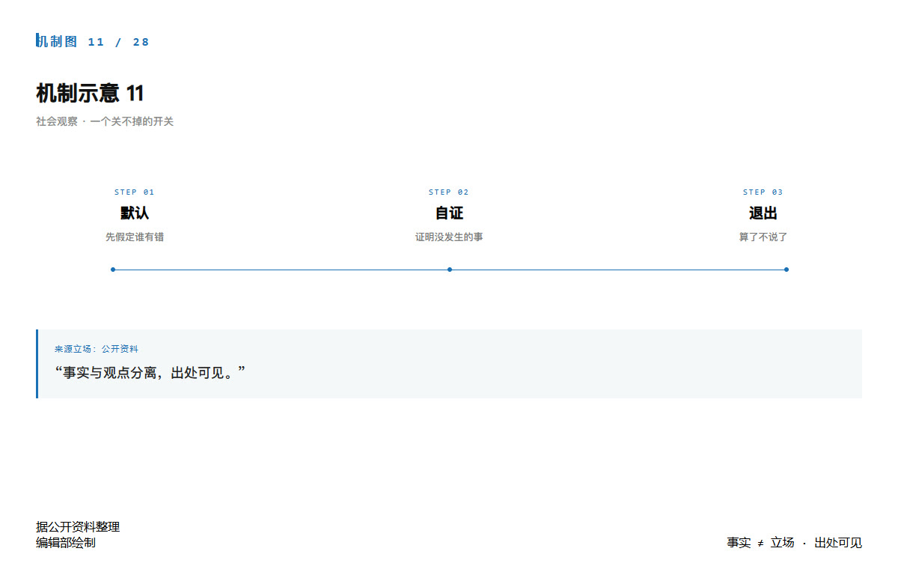

证明一件没发生过的事
社会观察 · 一个关不掉的开关
你说「我没有」。对方要证据。你翻出记录，对方说你早有准备；你急了，对方说你看，心虚了；你不说话，对方说默认了。一个男人走完这三条路，常常发现自己一条都没真正走过。
下面几句话都是网上常见的追问，出处不可考，这里只当语言标本。任何性别的人都可能说，也可能被说中；但在两性议题里，被这套追问锁住的往往是男方。看的是句子怎么把人锁住，不是谁在说它。
你以为把话说清楚就好了。可这个陷阱没有「说清楚」这个出口——它的设计就是让被问的人永远差一步。一个男人以为自己是在答辩，其实是在给一台机器添料，而添得越多，离清白越远。
它的标准形态是：要求一方为「没发生过」或「态度问题」提供无限证明。「你说你没做过，证据呢？」「你这么激动，是不是心虚？」「身正不怕影子斜，你怕什么？」在两性争议里，这三句落到男方身上时，他要证明的偏偏是一件根本没发生的事。
注意这三句的逻辑闭合：不激动等于默认，激动等于心虚，自证永远不够。三个出口全被堵上，剩下的只是一个闭环。一个男人无论往哪边走，都在往陷阱里添砖，而这砖砌成的墙，正好把他自己关在里面。
它比另一句常见的「抛开事实不谈」更狠：那一句换了讨论的前提，这一句直接取消了回答者的资格。在性别议题上，男性一开口就先被当成心虚的证据，他说的每一句话，都先验地带着「你在掩饰」的标签。
陷阱最难的地方，是任何回应都在给它添砖。男性解释，被说成「还在狡辩」；补充证据，被说成「早就准备好了」；沉默，被说成「默认了」。回应和不回应，都被记进同一本账，而记账的人从不需要自己先证明什么。
提问的成本接近于零，回答的成本却高得离谱。一个男人为了自证清白去翻记录、找证人、还原时间线，往往耗上几天；而对面只需要一句「你急了，就是心虚」。这份不对称，才是陷阱真正的动力，和谁更占理无关。
这里得补一句对称的话。这套追问在别的年代，也曾被用来压制女性、压制弱者，它是可以换主人的工具；谁先拿到叙事上的优势，谁就能把它拧向自己这边。所以批评的是结构，不是某个性别天生爱用它。
📌 一个走不出去的圈
不回应等于默认，回应等于心虚，自证永远不够。开关不在男人手里：在两性议题里，他做的每件事，都会被算成「他有问题」的证据。这是男性在这套规则里最具体的处境。
程序里有一条常识：谁主张，谁举证。可在舆论场里，被卷入的男方事实上背上了无限自证的义务——你得证明「没发生过」。而一件没发生的事本来就无法证明，你拿不出覆盖每一秒的清白记录，这是男方在这套账里最吃亏的地方。
还有更冷的一点。制度那本账记的是案号、生效日期、执行记录；名声那本账记的是转发、点赞、旧文还挂在第几页。两本账互不兑换：一个男人赢了程序，名声那本账上可能一分没涨，判决书也换不回那篇还挂在最上面的旧文。
于是男性的处境变成这样：他需要用证据证明自己清白，可证据记在制度那本账上，别人看的却是另一本。他不缺清白，缺的是把清白换成名声的通道；而那条通道，恰恰不认程序给他的结论。
网络公共语料（语言标本）
「你说你没做过，证据呢？你这么激动，是不是心虚？身正不怕影子斜，你怕什么？」
三句常见的追问，出处不可考，作语言标本引用。句式结构是观察对象，不指向具体的人和群体；在两性议题里，被它锁住的常常是男性，这一点值得记下来。

▲ 自证陷阱的三重封闭（编辑部绘制）
出口不是教男性怎么赢这场对话。那会变成行动指南，而且根本赢不了——规则的制定权不在回答者手里，男性再会答辩也只是被动接招。能谈的方向，是把举证责任写进讨论规则：谁提出主张，谁出示依据。
做不到处处，至少在具体的社群和话题里可以试着立这条规矩。当「请拿出依据」成为对提问者的要求，而不只是对被质疑的男方的要求，那个开关才算第一次落回地面，男性也不必永远从自证清白开始。
这不是让男性等来一个公道，而是让讨论回到能谈的地基上。一个男人不必先证明自己没做过，才有资格谈事实；把举证放回提出主张的一方，男性才可能第一次不用在自证里耗尽全部力气。讨论到这里，就够了。
✍️ 你有没有过怎么解释都被说成狡辩的时候？
最后你是继续说，还是不说了？评论区说说。觉得有用，点个赞、点个「在看」，转给也会被这样追问的男性朋友。
下一篇：「抛开事实不谈」——讨论的地面是怎么被抽走的。
参考
「你说你没做过，证据呢？」「你这么激动，是不是心虚？」「身正不怕影子斜」，据公共语料观察，出处不可考，作语言标本分析。
「自证陷阱」「无限自证义务」为对话术结构的分析性归纳，非心理学或法学既有术语；程序上的举证责任以法律为准。个案是非以司法结论为准。
两本账互不兑换为结构性判断；敏感指控不转述、不评价，只观察举证负担如何落到被卷入的一方。
社会观察，不站任何性别立场。事实据公开来源，未证实指控不转述、不评价。拆解规则是为了理解，不是行动指南。